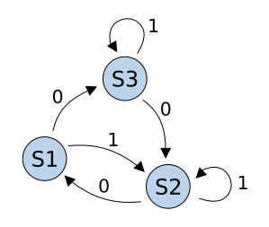

|  |
Module 9 - Behavioral Modeling Weeks 5, 6, 7, and 8 |
Learning Outcomes – After completing this module, you will be able to:
9.1 Design a VHDL model of a finite state machine using a three process, behavioral modeling approach from a state diagram.
9.2 Design a VHDL model of a finite state machine with states modeled using a user-enumerated type.
9.3 Design a VHDL model of a finite state machine with states explicitly encoded using subtypes.
9.4 Design a VHDL model of a finite state machine using a three process, behavioral modeling approach from a word description.
9.5 Design a VHDL model of a counter using a single process, behavioral modeling approach.
9.6 Design a VHDL model of a synchronous system using a register transfer level (RTL) modeling approach.
Learning Activities - To meet these learning objectives, you should do the following:
Section 9.1 - Modeling Sequential Logic Devices in VHDL
- Read: Section 9.1 in the textbook
- Do: HW 9.1 (MC quiz)
Laboratory Experiment 9(a) - Ripple Counter and the Character Displays
- Read: Lab9(a) Handout
- Do: Complete the lab experiment and demo to the instructor. Upload your top.vhd to the Lab 9(a) DropBox
___________________________________________________________
Section 9.2 - Modeling FSMs in VHDL
- Read: Section 9.2 in the textbook
- Do: HW 9.2 (MC Quiz)
Section 9.3 - FSM Design Examples in VHDL
- Read: Section 9.3 in the textbook
- Do: HW 9.3 (VHDL design/simulation)
Laboratory Experiment 9(b) - Walking 1 FSM
- Read: Lab9(b) Handout
- Do: Complete the lab experiment and demo to the instructor. Upload your top.vhd to the Lab 9(b) DropBox
___________________________________________________________
Section 9.4 - Counters
- Read: Section 9.4 in the textbook
- Do: HW 9.4 (VHDL design/simulation)
Laboratory Experiment 9(c) - Counters using One Process & 2n Clock Divider
- Read: Lab9(c) Handout
- Do: Complete the lab experiment and demo to the instructor. Upload your top.vhd & measurement screenshot to the Lab 9(c) DropBox
___________________________________________________________
Section 9.5 - RTL Modeling
- Read: Section 9.5 in the textbook
- Do: HW 9.5 (MC Quiz)
Laboratory Experiment 9(d) - BCD Counter & Precision Clock Divider
- Read: Lab9(d) Handout
- Do: Complete the lab experiment and demo to the instructor. Upload your top.vhd to the Lab 9(d) DropBox
End of Module Quiz
- Take the Module 9 Quiz (Timed Quiz, you have 60 minutes)